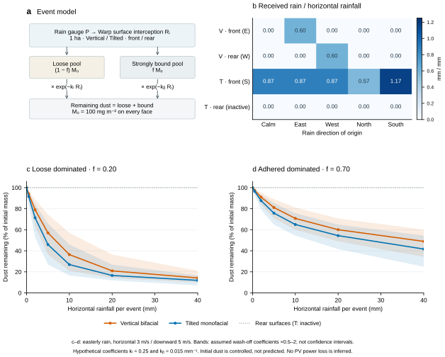

SUPPLEMENTARY METHOD · RAIN & SOILING · v0.5
비가 오면 먼지는
얼마나 씻겨 나가는가?
같은 초기 오염량에서 비교한 수직형·경사형의 강우 노출과 부착 먼지 잔류
Rain interception and adhesion-dependent dust retention
on vertical and tilted photovoltaic arrays
01 같은 비, 다른 표면 노출
강우량계의 10mm와 모듈 표면에 닿는 물의 양은 다릅니다. 수직형은 동·서향 양면 패널, 경사형은 남향 30° 단면 패널입니다. 경사형 뒷면은 비발전면이며, 아래 뒷면 먼지량은 물리적인 표면 상태만을 뜻합니다. 수직으로 내리는 비는 이상적인 수직면과 직접 충돌하지 않고, 옆에서 불어오는 비는 바람을 맞는 면을 적십니다. 따라서 “비가 왔으니 양면이 모두 깨끗해졌다”는 가정을 두지 않았습니다.
비를 맞기 전에는 모든 모듈의 각 면에 100mg/m²가 균일하게 붙어 있다고 설정했습니다. 이는 세척 효과만 비교하기 위한 통제 조건이며, 아래 건식 침착 시험의 결과를 누적한 값은 아닙니다.
비의 수평 이동속도 3m/s, 낙하속도 5m/s를 가정한 중앙 계수 결과입니다. 먼지 잔류율이며 발전 손실률이 아닙니다. 무강우 대조에서는 모든 면이 100%를 유지합니다.
02 강우 조건별 비교
강우량과 비가 오는 방향을 바꾸면 저장된 GPU 계산 결과가 표시됩니다. ‘약한 부착 우세’와 ‘강한 부착 우세’를 같은 표에서 비교할 수 있습니다.
10mm · 동풍 · 초기 오염 100mg/m²/면
| 배치·면 | 표면에 닿은 물 | 비가 안 왔다면 | 약한 부착 우세 강부착분 20% | 강한 부착 우세 강부착분 70% |
|---|---|---|---|---|
| 수직 양면형 앞면 | 5.99 mm | 100.0% | 36.4% | 70.8% |
| 수직 양면형 뒷면 | 0.00 mm | 100.0% | 100.0% | 100.0% |
| 경사 단면형 앞면 | 8.65 mm | 100.0% | 27.0% | 65.0% |
| 경사 단면형 뒷면 | 0.00 mm | 100.0% | 100.0% | 100.0% |
동풍 조건에서는 수직형의 동향 앞면과 경사형의 앞면에 직접 비가 닿습니다. 표면 강우 0은 이 모델의 직접 충돌이 없다는 뜻입니다.
03 강우 × 부착 상태의 상호작용

이 비교에서 확인한 점. 부착이 강할수록 같은 강우에도 먼지가 더 많이 남습니다. 수직형의 건식 침착이 작을 가능성과 강우 세척이 잘된다는 주장은 별개로 검증해야 합니다. 배치의 우열은 실제 먼지 누적·풍향·강우·양면 일사를 함께 계산해야 판단할 수 있습니다.
04 계산 방법과 가정
100 × 100m 부지에서 통로 순폭 1m인 기존 모듈 기하를 사용했습니다. 수직형 2,520장, 경사형 1,920장이고 모듈 한 면은 2.42m²입니다. 100 × 100 × 4m 영역의 위쪽과 바람 유입 측면에서 물을 나타내는 계산 입자를 투입하고, 패널·지면의 첫 충돌을 추적했습니다. 계산 입자 수는 실제 빗방울 수가 아닙니다.
무풍과 동·서·남·북풍, 두 배치, 난수 시드 3개에서 각 50만 입자를 사용했습니다. 주 계산 30회·1,500만 입자와 표본 수 점검용 400만 입자를 NVIDIA Warp 1.17.0 / RTX 4080 Laptop GPU에서 실행했습니다. 비의 속도는 처방한 값이며, 공기 흐름이나 빗방울의 가속 운동을 푼 결과가 아닙니다.
Rᵢ는 모듈 한 면의 수신 강우량(mm), P는 수평면 누적 강우량(mm), Hᵢ는 해당 면의 충돌 계수, N은 투입 입자 수입니다. Aⱼ는 유입 경계 면적, Aₘ은 모듈 면적이며, 1L/m² = 1mm로 환산합니다. 각 면에서 제거식을 먼저 계산한 뒤 평균하여 모듈 간 노출 차이를 보존했습니다. 한 모듈 안의 먼지와 물은 균일하게 퍼진다고 가정합니다.
| 입력 | 값 | 의미 |
|---|---|---|
| 초기 질량 M₀ | 100mg/m²/면 | 모든 면의 동일한 통제 조건 |
| 강부착분율 f | 0.20 / 0.70 | 약한 / 강한 부착 우세 시나리오 |
| 약한 먼지 세척 계수 kₗ | 0.25mm⁻¹ | 가정값; 실험에서 추정해야 함 |
| 강한 먼지 세척 계수 kᵦ | 0.015mm⁻¹ | 더 느리게 제거되는 가정값 |
| 계수 민감도 | 두 계수 동시 ×0.5, 1, 2 | 확률·신뢰구간이 아닌 가정 범위 |
| 강우량 | 0, 0.5, 2, 5, 10, 20, 40mm | 한 번의 강우 사건 누적량 |
이 단계에서 ‘흡착’은 표면에 남아 쉽게 떨어지지 않는 먼지를 뜻하는 유효 부착 분율로 표현했습니다. 분자 수준의 흡착력·접촉각·모세관력·젖었다 마르며 굳는 과정 자체를 계산한 것은 아닙니다. 세척 계수와 분율은 문헌에서 가져온 보편 상수가 아닙니다.
05 무엇을 검증했고, 무엇이 남았는가
모든 입자 실행에서 유입 = 앞면 + 뒷면 + 지면 + 이탈을 확인했고, 물 부피와 제거 전후 먼지 질량의 수지를 점검했습니다. 강우 광선 2,560개를 독립 NumPy 교차 계산과 대조했습니다. 무풍 경사면의 수신 강우량 cos30°, 동풍 수직면의 속도비 3/5와도 비교했습니다. GPU 세척식과 NumPy 식의 최대 차이는 0.000014mg/m² 미만입니다.
동풍·10mm·약한 부착·앞면 조건에서 입자 수를 50만에서 200만으로 늘린 점검은 잔류율 차이가 수직형 0.24%p, 경사형 0.19%p 미만이었습니다. 이는 선택한 두 조건의 수치 점검이며 모든 조건의 수렴이나 물리적 정확도를 보증하지 않습니다.
직접 비가 안 닿는 면은 이 모델에서 세척되지 않습니다. 실제로는 가장자리로 흐르는 물, 비산·튐, 난류, 재부착, 빗물 속 먼지, 물막과 배수 경로가 영향을 줄 수 있습니다. 강우 강도와 지속시간을 별도로 모델링하지 않아 같은 누적 강우량이면 같은 결과입니다. 짧은 약한 비가 오염을 더 굳히는 과정을 예측하려면 습윤·건조 이력과 부착력 실험이 추가로 필요합니다.
질량→광투과율→양면 출력의 보정 관계가 없으므로, 위 36%나 27%를 발전 손실률로 읽으면 안 됩니다. 다음 실험에서는 동일 먼지의 도포량·입경·조성, 강우 강도·풍향, 세척 전후 질량 및 앞·뒷면 광투과율을 함께 측정하고 계수를 추정해야 합니다.
06 이전 건식 침착 시험과의 관계
아래는 강우 전 단계에 해당하는 기존 건식 첫 충돌 시험입니다. 먼지 농도 100µg/m³, 침강속도 0.01m/s, 수평 풍속 1m/s, 노출 1시간과 충돌 시 완전부착을 가정했습니다. 30회·1,500만 입자를 계산했으며, 이번 통제 강우 실험의 초기 100mg/m²와는 별도 조건입니다.

07 자료와 재현
ZIP에는 모듈 기하, 건식·강우 실행 코드, 설정, 결과와 검증 기록을 제공합니다. 비교 표는 3개 난수 시드의 평균이며, 페이지는 저장된 계산 결과를 조회합니다. 재현 방법과 실행 환경은 ZIP의 README에 있습니다.
08 문헌과 적용 범위
- IEA PVPS Task 13. Soiling Losses – Impact on the Performance of Photovoltaic Power Plants (T13-21:2022). 공식 요약은 수분에 의한 고착·모세관 노화·뭉침과 현장별 보정의 중요성을 설명합니다. 본 시험의 부착 분율이나 세척 계수의 수치 근거로 사용하지 않았습니다.
- Sandia PVPMC. HSU Soiling Model. 먼지 축적 질량과 세척 사건을 다루는 기존 방법의 비교 배경입니다. 여기서는 HSU 광학식을 적용하거나 세척 시 질량을 일괄 0으로 초기화하지 않았습니다.
- NVIDIA. Warp 1.17 mesh_query_ray. 기하의 첫 교차점 계산에 사용한 공식 기능 문서입니다.